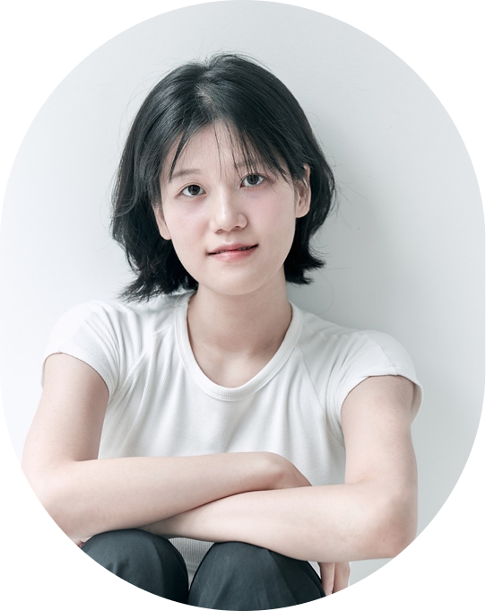
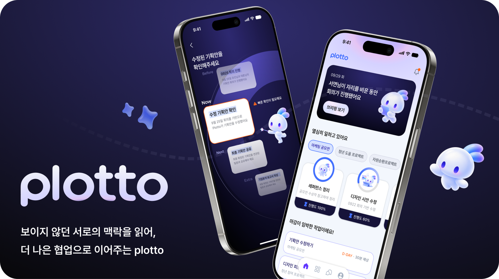
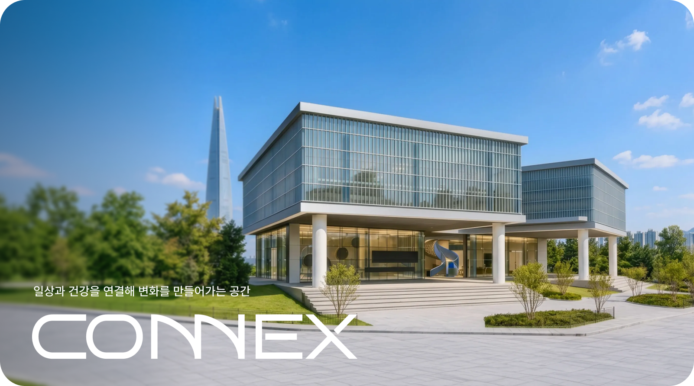

사용자 중심으로 이해
서비스 대상이 어떤 상황에 놓여 있는지 살핍니다. 사용자 조사에서 발견한 문제를 정리하고, 서비스 내 기능과 AI가 어떤 역할을 해야 할지 고민하고 구체화합니다.
Designed by Yun Jung Joo
UX DESIGN PORTFOLIO
Product & UX
2026
AI로 자동화하는 현재, 서비스는 사용자의 실제 니즈를 더 직관적으로 제공해야 합니다.
Agentic AI를 활용해 관찰과 질문을 통해 그 니즈를 발견하고, 기획부터 컨셉트 설계,
프로토타입 제작까지 빠르게 구체화합니다.

서비스 대상이 어떤 상황에 놓여 있는지 살핍니다. 사용자 조사에서 발견한 문제를 정리하고, 서비스 내 기능과 AI가 어떤 역할을 해야 할지 고민하고 구체화합니다.
Codex, Claude, Figma Make 등 다양한 AI 에이전트를 활용해 기획과 디자인을 빠르게 실제 기능으로 발전시키고, 바이브 코딩을 통해 프로토타입과 사용성 테스트를 직접 진행합니다.
앱 프로젝트에서 개발자 및 디자이너와 협업하며, 서비스가 기획부터 디자인·개발·배포로 이어지는 과정을 경험했습니다. 각 직군의 관점과 제약을 이해하며 소통할 수 있습니다.

plotto는 프로젝트 속에 흩어진 업무 맥락과 팀원 간의 연결을 돕는 AI 협업 에이전트입니다. 협업의 필요성을 감지하고, 관련된 정보와 팀원을 연결해 상황에 맞는 피드백과 협업 준비를 제안합니다.

공감, 공유 중심 감상 경험으로 클래식 음악 감상의 깊이와 만족도 높일 뿐더러, 타인의 감상과 해석을 접할 수 있는 기회를 제공합니다. 실시간 감상 기록을 통해 사용자의 참여를 유도합니다.

자율주행이 가능한 시대 속, 목적지 안내를 넘어 이동하는 과정이 만족스럽도록 운전자의 정서 흐름에 맞춰 여정을 함께하는 취향 기반의 ‘이동 경험 AI 서비스’를 기획하였습니다.

CONNEX는 일상 속에서 건강을 챙기고 분석할 수 있는 삼성 웨어러블 기반 헬스케어 라운지입니다. 이곳에서 사용자는 하나의 공간 안에서 건강과 관련한 여러 카테고리를 연속적으로 경험합니다.
프로젝트와 일상의 맥락을 파악해 필요한 일을 함께 준비하고 실행하는 개인 파트너이자 AI 에이전트 입니다.
기획·제작부터 공부·생활 계획까지 돕고, 진행 상황에 맞춰 다음 단계를 이어줍니다.
협업 상황을 분석해 시나리오별 AI의 역할과 판단 기준을 정의하고, 사용자 문제를 기능·정보 구조·서비스 블루프린트·UX 가이드라인으로 연결했습니다.
설문조사 및 인터뷰 결과 자료를 정리하고, 새로운 인사이트를 고민하는 과정을 함께했습니다. 또한 화면 구조와 사용자 행동 흐름, UX 문구와 사용성 기준을 다듬었습니다.
스토리보드와 장면을 구성하고, 캐릭터 동작과 UI 애니메이션 프롬프트를 작성했습니다. 프로토타입 경우 VS코드를 활용하며 실제 코딩도 진행하였습니다.
UI와 캐릭터 동작 이미지, 목업·아이콘·로고를 만들고 배경과 이미지를 수정했습니다. 또한 장표 제작 시 전달력을 높이기 위한 시안도 제작했습니다.
본인 능력에 채용 정보 조사와 이력서 작성을 함께했습니다. 지원한 곳의 직무에 맞게 포트폴리오의 내용을 구성하고 개인 웹사이트 제작까지 했습니다.
서비스 구현 및 웹페이지 제작 시 AI를 활용하여 코드를 구성하였고, 실제 HTML과 CSS 코드를 읽는 능력을 길렀습니다. 또한 실제 배포까지 진행하였습니다.